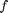
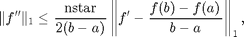
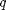
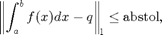
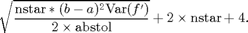

integral_g
1-D guaranteed function integration using trapezoidal rule
Contents
Syntax
q = integral_g(f)
q = integral_g(f,in_param)
q = integral_g(f,a,b,abstol,nlo,nhi,nmax)
q = integral_g(f,'a',a,'b',b,'abstol',abstol,'nlo',nlo,'nhi',nhi,,'nmax',nmax)
[q, out_param] = integral_g(f,...)
Description
q = integral_g(f) computes q, the definite integral of function f on the interval [a,b] by trapezoidal rule with in a guaranteed absolute error of 1e-6. Default starting number of sample points taken is 100 and default cost budget is 1e7. Input f is a function handle. The function y = f(x) should accept a vector argument x and return a vector result y, the integrand evaluated at each element of x.
q = integral_g(f,in_param) computes q, the definite integral of function f by trapezoidal rule within a guaranteed absolute error in_param.abstol, lower bound of initial number of points in_param.nlo, higher bound of initial number of points in_param.nhi, and cost budget in_param.nmax. If a field is not specified, the default value is used.
q = integral_g(f,a,b,abstol,nlo,nhi,nmax) computes q, the definite integral of function f on the finite interval [a,b] by trapezoidal rule with the ordered input parameters, guaranteed absolute error tolerance abstol, lower bound of initial number of points in_param.nlo, higher bound of initial number of points in_param.nhi, and cost budget nmax.
q = integral_g(f,'a',a,'b',b,'abstol',abstol,'nlo',nlo,'nhi',nhi,,'nmax',nmax) computes q, the definite integral of function f on the finite interval [a,b] by trapezoidal rule within a guaranteed absolute error tolerance abstol, lower bound of initial number of points in_param.nlo, higher bound of initial number of points in_param.nhi, and cost budget nmax. All three field-value pairs are optional and can be supplied.
[q, out_param] = integral_g(f,...) returns the approximated integration q and output structure out_param.
Input Arguments
- in_param.a --- left end of the integral, default value is 0
- in_param.b --- right end of the integral, default value is 1
- in_param.abstol --- guaranteed absolute error tolerance, default value is 1e-6
- in_param.nlo --- lowest initial number of function values used, default value is 10
- in_param.nhi --- highest initial number of function values used, default value is 1000
- in_param.nmax --- cost budget (maximum number of function values), default value is 1e7
Output Arguments
- out_param.exceedbudget --- it is true if the algorithm tries to use more points than cost budget, false otherwise.
- out_param.tauchange --- it is true if the cone constant has been changed, false otherwise. See [1] for details. If true, you may wish to change the input in_param.ninit to a larger number.
- out_param.npoints --- number of points we need to reach the guaranteed absolute error tolerance abstol.
- out_param.errest --- approximation error defined as the differences between the true value and the approximated value of the integral.
- out_param.nlo --- lowest initial number of function values
- out_param.nhi --- highest initial number of function values
- out_param.ninit --- initial number of points we use, computed by nlo and nhi
- out_param.nstar --- final value of the parameter defining the cone of functions for which this algorithm is guaranteed; nstar = ninit-2 initially and is increased as necessary
- out_param.nmax --- cost budget (maximum number of function values)
- out_param.abstol --- guaranteed absolute error tolerance
- out_param.a --- low end of the integral
- out_param.b --- high end of the integral
Guarantee
If the function to be integrated,  satisfies the cone condition

then the  output by this algorithm is guaranteed to satisfy

provided the flag
And the upper bound of the cost is

Examples
Example 1
f = @(x) x.^2; [q, out_param] = integral_g(f) % Integrate function x with default input parameter to make the error less % than 1e-7.
q =
0.3333
out_param =
f: @(x)x.^2
a: 0
b: 1
abstol: 1.0000e-06
nlo: 10
nhi: 1000
nmax: 10000000
ninit: 100
tau: 197
exceedbudget: 0
tauchange: 0
npoints: 3565
errest: 9.9688e-07
Example 2
[q, out_param] = integral_g(@(x) exp(-x.^2),'a',1,'b',2,'nlo',100,'nhi',10000,'abstol',1e-5,'nmax',1e7) % Integrate function x^2 with starting number of points 52, cost budget % 10000000 and error toerence 1e-8
q =
0.1353
out_param =
a: 1
abstol: 1.0000e-05
b: 2
f: @(x)exp(-x.^2)
nhi: 10000
nlo: 100
nmax: 10000000
ninit: 1000
tau: 1997
exceedbudget: 0
tauchange: 0
npoints: 2998
errest: 7.3718e-06
See Also
References
[1] N. Clancy, Y. Ding, C. Hamilton, F. J. Hickernell, and Y. Zhang, The complexity of guaranteed automatic algorithms: Cones, not balls, Journal of Complexity 2013, to appear, DOI 10.1016/j.jco.2013.09.002.
[2] Sou-Cheng T. Choi, Yuhan Ding, Fred J. Hickernell, Lan Jiang, and Yizhi Zhang, "GAIL: Guaranteed Automatic Integration Library (Version 1.3.0)" [MATLAB Software], 2014. Available from http://code.google.com/p/gail/
If you find GAIL helpful in your work, please support us by citing the above paper and software.